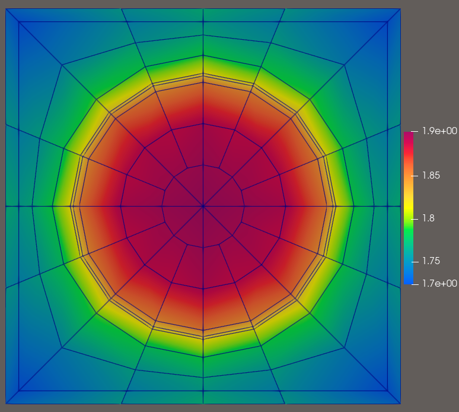

4.1.6. Fission Rate in a Fuel Rod
This tutorial computes an energy-integrated fission rate in a fuel rod. It reuses the mesh geometry from the pin-cell tutorial with the compact seven-group C5G7 UO\(_2\) and water cross sections.
4.1.6.1. Solve the pin-cell eigenvalue problem
The OBJ material regions map to fuel, cladding, gap, and moderator block IDs 0 through 3. Block 0 uses the C5G7 UO\(_2\) data, while blocks 1 through 3 use the C5G7 water data to keep this postprocessing example to two materials. Reflecting boundaries represent an infinite lattice.
[ ]:
import numpy as np
from mpi4py import MPI
from pyopensn.aquad import GLCProductQuadrature2DXY
from pyopensn.context import Finalize
from pyopensn.mesh import FromFileMeshGenerator
from pyopensn.post import VolumePostprocessor
from pyopensn.solver import DiscreteOrdinatesProblem, PowerIterationKEigenSolver
from pyopensn.xs import MultiGroupXS
rank = MPI.COMM_WORLD.rank
mesh = FromFileMeshGenerator(filename="postprocessing_pincell.obj").Execute()
mesh.SetOrthogonalBoundaries()
fuel_xs = MultiGroupXS()
fuel_xs.LoadFromOpenSn("c5g7_uo2.xs")
water_xs = MultiGroupXS()
water_xs.LoadFromOpenSn("c5g7_water.xs")
num_groups = fuel_xs.num_groups
quadrature = GLCProductQuadrature2DXY(
n_polar=2, n_azimuthal=64, scattering_order=0
)
problem = DiscreteOrdinatesProblem(
mesh=mesh,
num_groups=num_groups,
groupsets=[
{
"groups_from_to": (0, num_groups - 1),
"angular_quadrature": quadrature,
"angle_aggregation_type": "polar",
"inner_linear_method": "classic_richardson",
"l_abs_tol": 1.0e-5,
"l_max_its": 300,
}
],
xs_map=[
{"block_ids": [0], "xs": fuel_xs},
{"block_ids": [1, 2, 3], "xs": water_xs},
],
boundary_conditions=[
{"name": name, "type": "reflecting"}
for name in ("xmin", "xmax", "ymin", "ymax")
],
options={
"verbose_inner_iterations": False,
"verbose_outer_iterations": False,
"use_precursors": False,
"power_default_kappa": 1.0,
},
)
solver = PowerIterationKEigenSolver(problem=problem, k_tol=1.0e-8)
solver.Initialize()
solver.Execute()
keff = solver.GetEigenvalue()
4.1.6.2. Integrate \(\Sigma_f\phi\) in the fuel
The block_ids restriction selects only the fuel cells. xs_multiplier="sigma_f" applies the group-dependent macroscopic fission cross section before the spatial integration. Summing the returned group values gives the total fission rate in the solver’s eigenvector normalization.
[ ]:
fission = VolumePostprocessor(
problem=problem,
value_type="integral",
block_ids=[0],
xs_multiplier="sigma_f",
)
fission.Execute()
groupwise_fission_rate = np.asarray(fission.GetValue()[0], dtype=float)
total_fission_rate = float(groupwise_fission_rate.sum())
if rank == 0:
print(f"Pin-cell eigenvalue={keff:.8e}")
print(f"Fuel fission rate={total_fission_rate:.8e}")
assert total_fission_rate > 0.0
if "opensn_console" not in globals():
from IPython import get_ipython
if get_ipython() is not None:
Finalize()
MPI.Finalize()

Figure: Scalar flux in energy group 0.